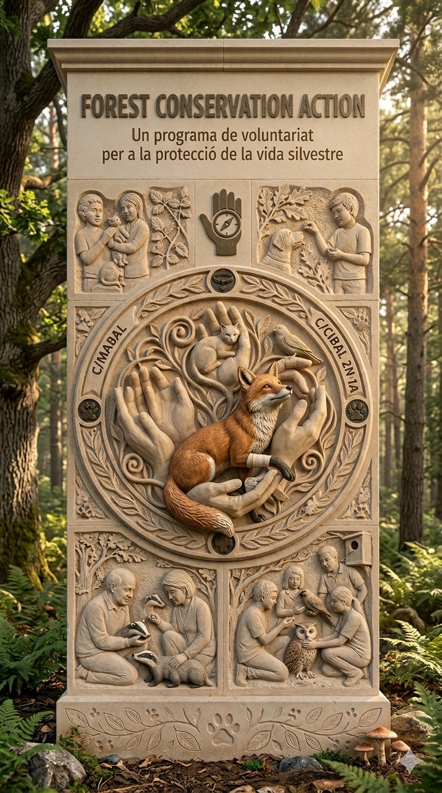

Manos que Ayudan
Una jornada dedicada a la colaboración directa con el refugio: mejorar los espacios, cuidar el entorno y participar activamente en el bienestar de los animales.
“Manos que Ayudan” es una jornada de voluntariado ambiental y animal donde los participantes colaboran en tareas de mantenimiento, mejora de hábitats y apoyo a las tareas diarias del refugio.
La jornada se organiza por grupos de trabajo dirigidos por monitores, asegurando que cada tarea sea segura, eficiente y gratificante para todos.

Ayúdanos a reparar y mejorar los refugios para que los animales vivan en las mejores condiciones posibles.
Participa en tareas de jardinería ecológica y recuperación de espacios naturales dentro del refugio.
Prepara materiales de juego y estimulación para los animales, mejorando su calidad de vida diaria.
Tu ayuda es fundamental. Ven a pasar una mañana diferente, conoce a gente con tus mismos intereses y deja una huella real en el bienestar de los animales del refugio.
“Cuando ayudamos a los animales, también nos ayudamos a nosotros mismos.”
MANOS QUE AYUDAN